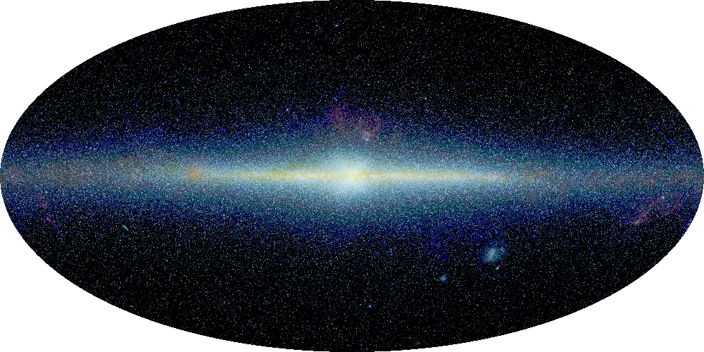

En yeni planlı periyot
Yükleniyor…
SPHEREx gökyüzü görüntülerini karşılaştırma aracı

Bir yıldız adı yaz. Eski fotoğraf plakları ve SPHEREx kareleri aynı koordinatta üst üste oynar: sabit yıldızlar yerinde kalır, öz hareketi olan kayar. Hız karelerden ölçülür, spektrum SPHEREx'in 102 bandından çıkar.
Harita: SPHEREx DR1 tüm gökyüzü, 1,0 / 2,2 / 4,5 µm, galaktik koordinat (NASA/JPL-Caltech/IPAC).
Bir tür seç, karta tıkla: görüntüler ve spektrum birkaç saniyede gelir.
SPHEREx'in bütün gökyüzü görüntüsü. Haritada herhangi bir yere tıkla: oraya yaklaşır ve o noktanın SPHEREx kareleri aşağıda yüklenir. Sürükle: kaydır, tekerlek: yakınlaştır.
Kaynak: SPHEREx DR1 tüm gökyüzü küpü (NASA/IPAC IRSA), Aladin Lite (CDS) ile. Sahte renkte mavi 0,91 µm, yeşil 2,0 µm, kırmızı 4,6 µm. Yıldızlar sarı işaretle: görev hedefleri.
Canlı
IRSA, SPHEREx'in yeni gözlemlerini her hafta "planlama periyotları" hâlinde arşive ekler. Bu bölüm arşivi 30 dakikada bir kendiliğinden tarar; yeni periyot gelince görüntüleyici de onu kullanır.
Arşiv taranıyor…
Yükleniyor…
Yükleniyor…
Yükleniyor…
Yükleniyor…
| Periyot | Yayın | Dosya | Pozlama | Boyut | Arşive eklendi |
|---|
DR1 (son işlenmiş veri)QR3 (hızlı yayın)Yalnız QR2
Her sütun bir hafta, her kare o haftanın bir planlama periyodu. Üstüne gelince adı ve hangi yayınlarda bulunduğu görünür.
Yöntem, sınırlar ve bütün bulgular → · Açık veriyle ve sunucusuz, düşük maliyetli bir altyapıyla çalışır; bakım için tek bir küçük sunucu kodu yeterli.